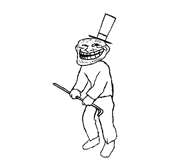

还有秒
恭喜你走过了人生的第一个阶段，从一个坑跳了出来，然后两个月之后跳入另一个坑
考完就考完了，不用想太多，拿到成绩了再去折腾，这个星期可以放心嗨到爆 
接下来的内容你要保持低调，不要张扬，想好了翻页
嗯，多半你也猜到了，我喜欢你，这不是在演习，我是认真的
从寒假来这边，就比较在意你，只是我慢热，在意只会让我想去多接触你，有可能发展为喜欢，也有可能慢慢又变得普通
然后，结果就是喜欢你了。不过，就目前来讲，没到爱那一步，需要相处才有可能发展为爱
我是那种不轻易会喜欢人的人，但是碰到了喜欢的就不会轻易放走，感情跟缘分都是一次性的，过了就过了，我不想错过，尽管我们两个年龄差了12岁
所以，现在我问你，你对我是怎么想的，把我当男人看，男女之情 or 当哥哥看，兄妹之情
你的选择会决定我用什么方式跟你相处
想成为情侣，就往后看，我有认真考虑过未来
内容比较啰嗦，我希望你认真看下去，这些都是我认真思考过的事
由于年龄差比较大，代沟是难免会有的，争吵也难免会有，希望你理性看待这些问题，这些都是相处过程中避免不了的事
跟你同龄人比起来，我比他们成熟，经济能力也比学生要好，除非那个小伙子是个富二代，我比他们更能包容你，同龄的男孩子跟你成为男女朋友的话肯定不会忍你太多
但是，比起他们来，可能我没那么有活力，毕竟这个年龄的人了，更多考虑的是生活跟事业，不是娱乐，但是我会变得有活力点，给你带来更多的快乐
同时，我也希望你慢慢成熟起来，读了高中，年龄不算小了，很多事不要太任性，没必要太情绪化
两个人在一起，就是合二为一，都需要适应对方，改变自己的一些习惯，这方面我希望你多听我的，经历得比你多，吃过的苦跟亏都不少，懂得不少道理
多听我的，会让你以后少走很多弯路，啰嗦你，是在乎你，不要嫌弃
记得我跟你说过，我是比较呆的人，没办法，理工男都差不多这样。好多事情不要试图暗示我，让我猜，我没那个功能，有想法要直接跟我说。我要是能想到的话，就会直接做
伤人的玩笑尽量不要开，大多数时候我都分不清，会很认真的对待，认真，是因为在乎
我们的未来会很艰辛，需要两个人付出很多才能走到最后，要有觉悟
如果不能走到最后，也要好聚好散。只是，感情是一次性的，散了，就是陌生人，我不会从头再来
你要读书，我要工作，我们相伴的时间肯定不会太多，希望彼此好好珍惜，不要在一起的时候还去不停的聊QQ
这个时候在你身边的人是我，不是手机另一端的人
先说这么多吧，剩余的事来日方长，慢慢交流
还有很重要的一点，因为你是学生，这个时期谈恋爱肯定会遭到家长跟老师的反对，得不到家人祝福的感情是很悲伤的
所以，这3年内我们只能做地下情侣，对外公开是兄妹，哪怕是你再好的同学也不要说，人要是背叛起来就是瞬间的事
等你高考结束，我们还在一起的话，我会带你回家见父母
没计算错的话，现在时间应该是在20:00-20:30之间，我会在20:00提前下班走人，在烧烤摊，等你